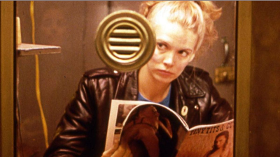
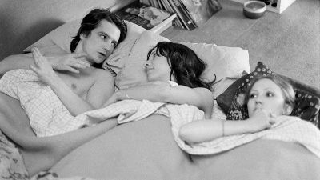
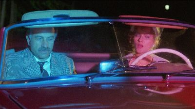
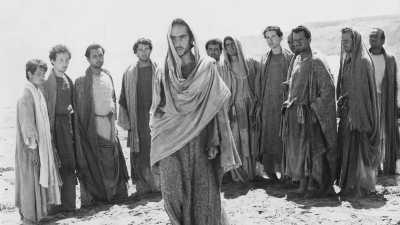
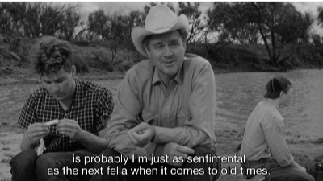
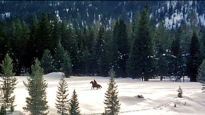
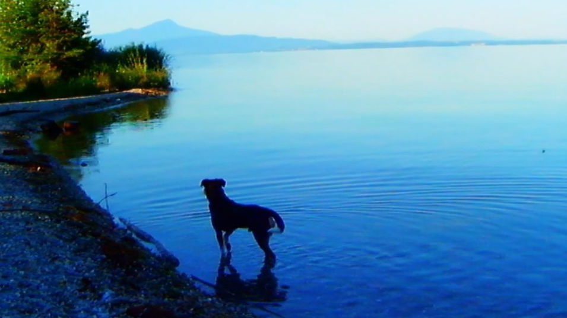

Rétrospective 2022
Notre top du cinéma de patrimoine en 2022 à Paris
Il y a maintenant un peu plus d’un an, et alors même que l’industrie du cinéma venait à peine de se « déconfiner », nous avons lancé Le Rétro Projecteur avec cette focalisation totalement déraisonnable de ne s'intéresser qu’au cinéma de patrimoine (!) exploité en salles (!!). À l’aune de cette première année, nous avons eu envie de revenir sur nos plus beaux souvenirs de projections de vieux films à Paris.
Si l’année a indéniablement été marquée par la ressortie massive de La maman et la putain, elle a aussi été riche en découvertes d’œuvres moins connues (comme le merveilleux Variety de Bette Gordon ou Le grand silence de Sergio Corbucci). À cela se rajoutent les rétrospectives de Fassbinder, de Pasolini, de Kinuyo Tanaka ou encore de Jean-Luc Godard et Peter Bogdanovich à la suite de leur décès.
Suivre de près l’actualité du cinéma de patrimoine en salles invite inévitablement à s’interroger sur le type de cinéma qui est promu par les programmateurs. En cela, la rediffusion de vieux films est un baromètre de la perception que nous avons aujourd’hui du canon cinématographique. Nous reviendrons très vite sur cela avec une analyse détaillée des réalisateurs, régions et décennies qui ont dominé l’année 2022.
En attendant, nous sommes curieux de savoir ce que vous en avez pensé, vous, de cette année 2022. Quelles œuvres avez-vous préféré (re)découvrir en salles cette année ? Qu’avez vous pensé de la programmation et des diverses rétrospectives ? Quel cinéma de patrimoine souhaiteriez-vous retrouver plus souvent dans les salles parisiennes ? N’hésitez pas à nous faire part de vos impressions par retour de mail !
En espérant qu’en 2023 Le Rétro Projecteur continuera à vous aiguiller vers la séance d’un vieux classique que vous rêvez de revoir ou d’une pépite méconnue fraîchement restaurée !
Bonne année et à bientôt dans les salles,
- Le Rétro Projecteur
Le 2 janvier 2023

Variety de Bette Gordon (1983), vu le 16 juin au Christine
Le plaisir de découvrir ce film en version restaurée a été d’autant plus grand que nous ne connaissions pas l’œuvre de Bette Gordon. Variety est un film qui a pour sujet le fait-même de se faire des films. Qui plus est : une bonne partie du récit se déroule carrément dans un cinéma (porno) ! La réalisatrice nous plonge dans une ambiance mystérieuse, qui sollicite constamment notre imagination… Un chef d’œuvre de suggestion.

La maman et la putain de Jean Eustache (1983), vu le 18 juin au Mk2 Bastille
Jusqu’alors, les cinéphiles se refilaient sous le manteau des versions plus ou moins dégradées de ce film culte, jamais édité en DVD. Dans la frénésie que provoqua sa simple ressortie, on en oublierait presque de rappeler à quel point l’œuvre est géniale. Dans un étrange mélange d’anarchisme post-68ard et de dandysme, et au fil de longues scènes dialoguées à la mise en scène sèche, Eustache explore les impasses d’une révolution sexuelle en train de se faire. Le format minimaliste de l’image, proche du carré, rendait paradoxalement l’expérience cinéma (au premier rang d’une salle bondée en pleine canicule) d’autant plus précieuse.

Lola, une femme allemande de Rainer Werner Fassbinder (1981), vu le 18 août à l’Espace Saint-Michel
Quarante ans après sa mort, Fassbinder était de retour, le temps d’un été, sur les écrans de la capitale. La redécouverte de son œuvre nous a permis de mesurer combien l'expressionnisme de sa scénographie, son ironie mordante et son incroyable impertinence se sont tristement raréfiés dans le paysage cinématographique contemporain. Poil à gratter jusque dans sa mise en scène, Fassbinder fonde l’un de ses plus beaux films, Lola, une femme allemande, sur un magnifique contrepied en nichant dans une légère comédie de mœurs un véritable brûlot politique au cynisme dévorant.

L'Evangile selon Saint Matthieu de Pier Paolo Pasolini (1964), vu le 4 septembre au Champo
Autre grand cinéaste à l’honneur cet été : Pierre Paolo Pasolini. S’il partage avec Fassbinder son esprit provocateur et incendiaire (voir les Cahiers du Cinéma n°789), il se démarque par l’omniprésence de thèmes en lien avec le christianisme dans son œuvre. Son traitement de ceux-ci peut relever aussi bien de la subversion que de la revitalisation. Dans L'Evangile selon Saint Matthieu, le déplacement des représentations habituelles de scènes bibliques est double : Jésus est interprété par un syndicaliste catalan en lutte contre le franquisme et le style est bien plus proche de celui du documentaire que du péplum ou de l’hagiographie.

The Last Picture Show de Peter Bogdanovich (1971), vu le 18 mai au Forum des Images
Décédé cette année, Peter Bogdanovich s’est illustré aussi bien par sa propre œuvre que par son rôle de passeur cinéphilique. Ce n’est donc peut-être pas un hasard si son film le plus connu s’intéresse à la transmission de la mémoire. Dans une petite ville d’Anarene, Texas, en plein dépeuplement, les parents cherchent à délester leur mélancolie sur la fringante jeunesse, la rendant nostalgique de souvenirs qu’elle ne vivra jamais. Revoir La dernière séance dans une salle de cinéma à l’heure où les oiseaux de mauvaise augure nous prédisent les “dernières séances” de celles-ci, donne au film une épaisseur toute particulière…

Le Grand Silence de Sergio Corbucci (1968), vu le 10 avril au Max Linder
Aux côtés de Leone et Sollima, Corbucci est l’un des “trois Sergio” à avoir durablement marqué le genre du western spaghetti. Avec Le Grand Silence, il réalise son chef-d'oeuvre mêlant les paysages hivernaux grandioses de l’Utah à la musique envoûtante d’Ennio Morricone. Le duel au sommet de deux pistoleros (Klaus Kinsky en cruel chasseur de prime et Jean-Louis Trintignant en cowboy bienveillant qui a perdu l’usage de la parole) tient en haleine pendant tout le film mais c’est surtout le cynisme du final que l’on garde en tête, tant il n’avait rien à envier à celui de l’exercice électoral auquel on s’était soumis quelques heures plus tôt…

Adieu au langage de Jean-Luc Godard (2014), vu le 23 septembre au Mk2 Beaubourg
Les adieux à Godard provoquèrent son retour sur les écrans de la capitale et la découverte de ce film fou... C'était surtout la promesse que l'intempérance et l'inépuisable modernité du Suisse resteront immortelles.